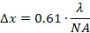
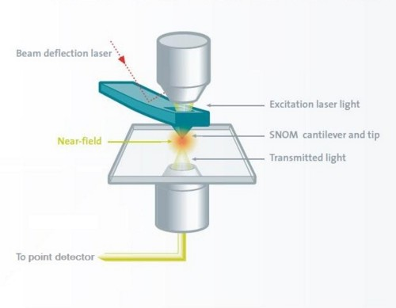

|
理论
|
经典（以及共聚焦）显微镜的分辨率受到激发光波长的限制。ABBE 在 1890 年左右对此进行了详细研究。根据他的研究，透镜系统必须至少捕获物体的第一级衍射级（例如光栅）才能在图像空间中分辨物体。这就是数值孔径对光学系统分辨率重要性的原因。
在具有圆形孔径的理想透镜系统中，点物体的像将为艾里斑。通过对辐照度进行积分，可以发现 84% 的光到达中心斑点内，91% 的光在第二个暗环的边界内。
如果将两个点物体靠近在一起，使得第一个艾里斑的最大值位于第二个艾里斑的第一个最小值处，我们仍然能够分辨这两个斑点。这就是瑞利极限，由该（任意）准则定义的分辨率为：

其中 λ 是光的波长，NA = n · sin α 是透镜系统的数值孔径，而 n 是周围介质的折射率。
市售物镜的最大 NA 在空气中工作时约为 0.95，使用油浸物镜（样品浸在油中）时约为 1.4。
从该公式可以看出，传统显微镜的最大分辨率为
使用共聚焦显微镜，此分辨率可进一步提高至
这些值仅在最佳条件下有效，例如薄样品。
克服衍射极限的唯一方法是在近场范围内非常靠近样品处观察（观察者-样品距离 λ/5）。
这一想法最初由 SYNGE 于 1928 年提出。他建议使用一个带有许多远小于光波长的小孔的金属板，从背面用光照亮该板，然后在接近样品处扫描该板。如果板-样品距离远小于孔的直径，则分辨率受光源（孔）直径的限制，而不受光波长的限制。
当时不可能验证这一想法，直到 1972 年 ASH 和 NICOLLS 才能用微波范围内的电磁波验证该理论（3 cm 波长，0.5 mm 分辨率 ⇒ λ/60）。光学领域的第一批结果由 POHL 和 BETZIG（1986 年）获得，他们使用拉制的光纤和剪切力反馈进行距离控制。
WITec SNOM 解决方案更进一步，使用微结构悬臂梁传感器和光束偏转反馈（来自AFM的成熟技术）进行距离控制。要利用 SNOM 可获得的高分辨率，应考虑以下几点：
最大分辨率由传感器的孔径决定，但该分辨率仅在近场中可行。因此，探针与样品之间的距离应小于孔径半径（对于 100 nm 孔径，< 50 nm），否则分辨率会降低。该分辨率只能在样品表面获得（不能像共聚焦显微镜那样观察样品内部）。
由于探针与样品之间的距离很小，形貌特征与孔径发出的光之间始终存在相互作用，这会产生伪影。用户应始终注意这些伪影可能存在。另一方面，这些伪影的重要性不应被夸大。
仔细比较光学图像与同时获得的形貌图像有助于识别伪影。如果在与形貌台阶完全相同的位置发现光学特征，应持怀疑态度。特别是当光学对比度变化仅为整体强度的百分之几时。
如果存在形貌台阶，探针与样品之间的距离会发生变化，它们之间的电场（近场）耦合也会发生变化，这可能导致检测强度发生变化。
通常，光学孔径与接触点略有偏移（50-150 nm）。这是因为机械接触位于光学孔径边缘的某处。中空孔径周围有一层 100-150 nm 厚的铝层提供机械接触。因此，真正的光学对比度应在光学图像和形貌图像之间显示 50-150 nm 的偏移。

WITec SNOM 解决方案在透射模式下的工作原理
近场光学显微镜的首选模式是透射模式。在此模式下，透过透明（或荧光/发光）样品的光由探测器收集，形貌伪影通常是一个较小的问题。
在反射模式中，透过孔径并从样品表面反射的光由辅助光学器件收集。在此模式下，形貌引起的伪影最有可能出现，甚至可能主导图像。反射模式最常用于样品不透过激发光的情况。在这种情况下，透过孔径的光必须穿过探针与样品之间极小的间隙。如果探针扫描过形貌台阶，检测到的光强度很可能会发生变化，从而产生形貌引起的伪影。在此，再次仔细比较形貌和光学图像对于区分实际样品特征和伪影非常有帮助。
WITec 系统可实现的近场光学模式如下：